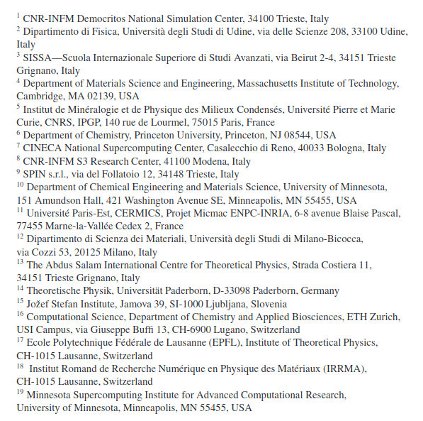
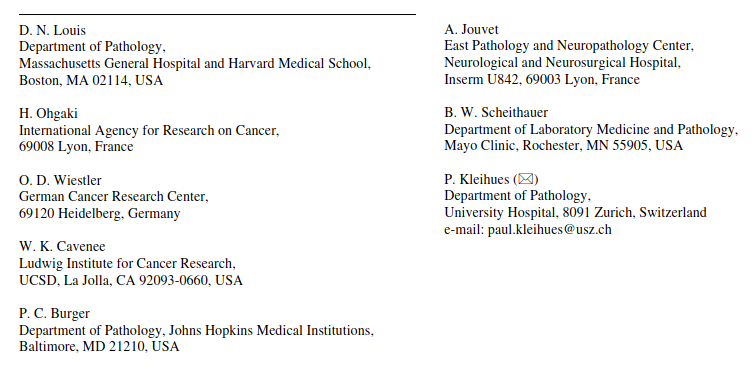
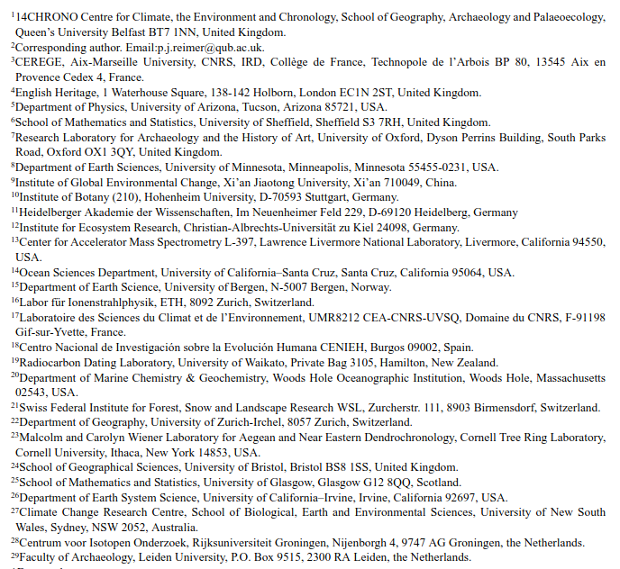
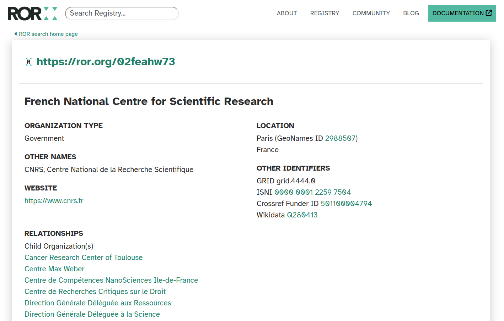
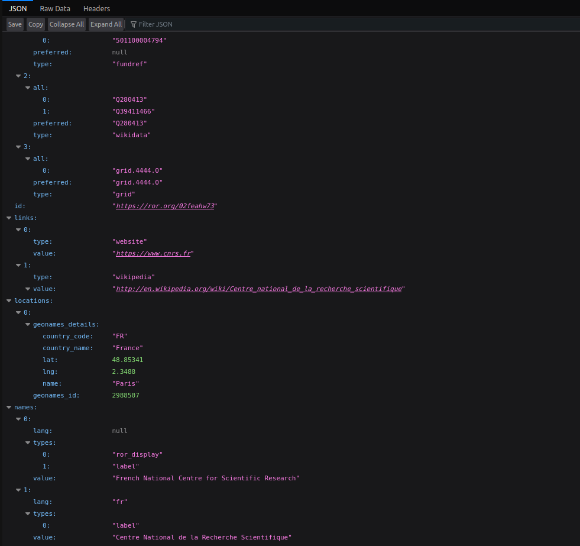
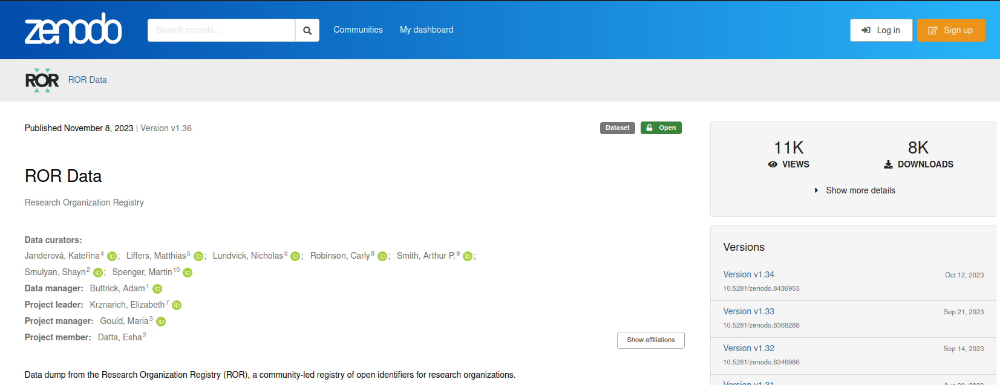
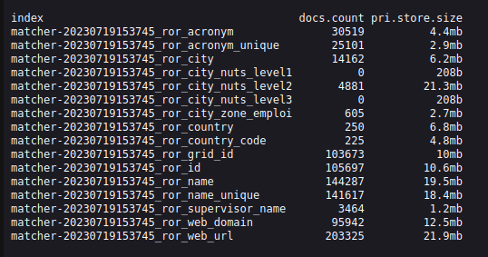
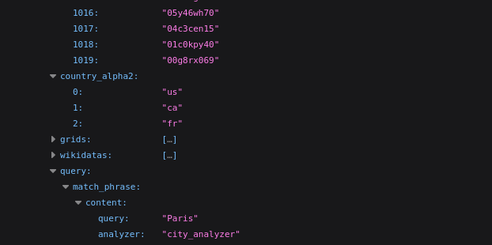
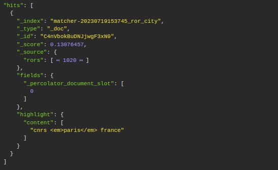
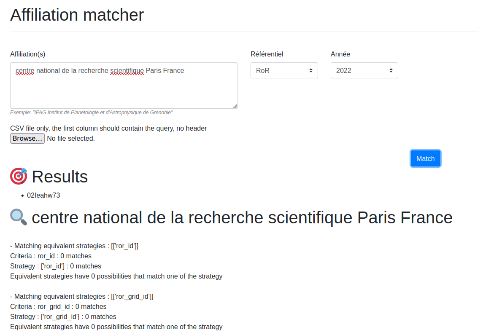

La percolation avec Elasticsearch pour aligner un référentiel
Anne L'Hôte
Département des outils d'aide
à la décision - SIES - MESR

Publication scientifique
Publication scientifique
- Titre
- Auteur(s)
- Affiliation(s)
- Date de publication
- Résumé
- Mots-clés
- ...
Publication scientifique



Publication scientifique
Les limites ⛔
- Champ texte libre (Centre Nationale de la Recherche Scientifique)
- Multilinguisme (French National Centre for Scientific Research)
- Acronyme, alias (CNRS)
- Evolution du paysage de l'ESR (fusion, fermeture, renommage)
Un référentiel : Research Organization Registry (ROR)
- Structures de recherche
- International
- Récent (2019)
- Open data (CC0)
- Plus de 100 000 structures
Un référentiel (ROR)
Site web

Un référentiel (ROR)
API

Un référentiel (ROR)
Data dump

Et maintenant ?
Comment faire le lien entre un texte libre et un référentiel ?
🤝
Et maintenant ?
L'IA ?
Boite noire donc difficile de comprendre la raison des erreurs
Elasticsearch !
Et son percolate query
🎉
Elasticsearch
“The percolate query can be used to match queries stored in an index. The percolate query itself contains the document that will be used as query to match with the stored queries.“
selon la documentation
Elasticsearch
Liste des métadonnées disponibles dans RoR
- ror_acronym
- ror_city
- ror_country
- ror_country_code
- ror_id
- ror_name
- ror_supervisor_name
- ror_web_url
- ...
Elasticsearch
Construction des index ES liés

Elasticsearch
Indexation des données

Elasticsearch
Requête ES pour un critère donné (city)
https://cluster.elasticsearch/ror_city/_search
{
"query": {
"percolate": {
"field": "query",
"document": {
"content": "cnrs paris france"
}
}
},
"_source": {
"includes": [
"rors"
]
},
"highlight": {
"fields": {
"content": {
"type": "unified"
}
}
}
}
Elasticsearch
La réponse à la question

Elasticsearch
Mise en place de stratégies
stratégie : critère_01 AND critère_02 AND critère_03
famille de stratégies : stratégie_01 OR stratégie_02 OR stratégie_03
stratégies : famille_de_stratégies_01 THEN famille_de_stratégies_02
Elasticsearch
Elasticsearch
Elasticsearch
S'applique à d'autres référentiels
- country (basé sur pycountry)
- Grid.ac (obsolète)
- RNSR
- ...
Elasticsearch
Résultats 📈
| matcher | precision | recall |
|---|---|---|
| country | 0.9953 | 0.9690 |
| grid | 0.7946 | 0.5944 |
| rnsr | 0.9654 | 0.8192 |
| ror | 0.8891 | 0.2356 |
Ressources
❔ Des questions ?
📨 anne.lhote@recherche.gouv.fr
📨 bso@recherche.gouv.fr
🐦 @annelhote